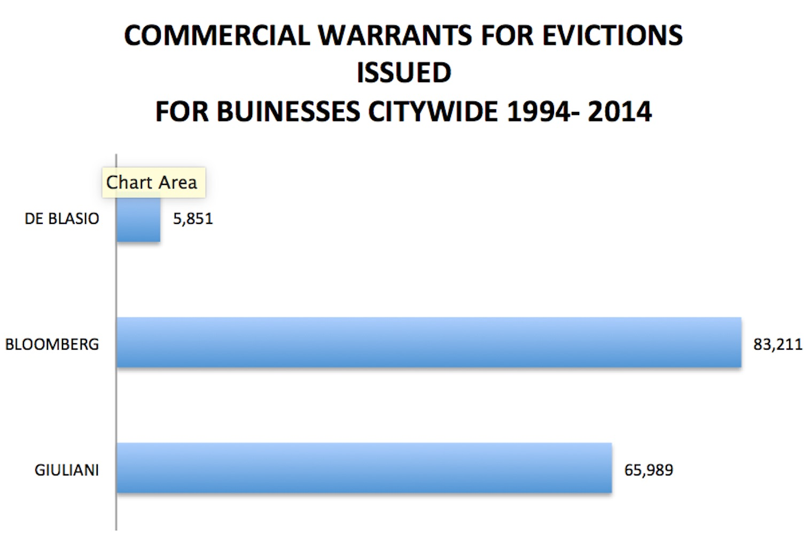
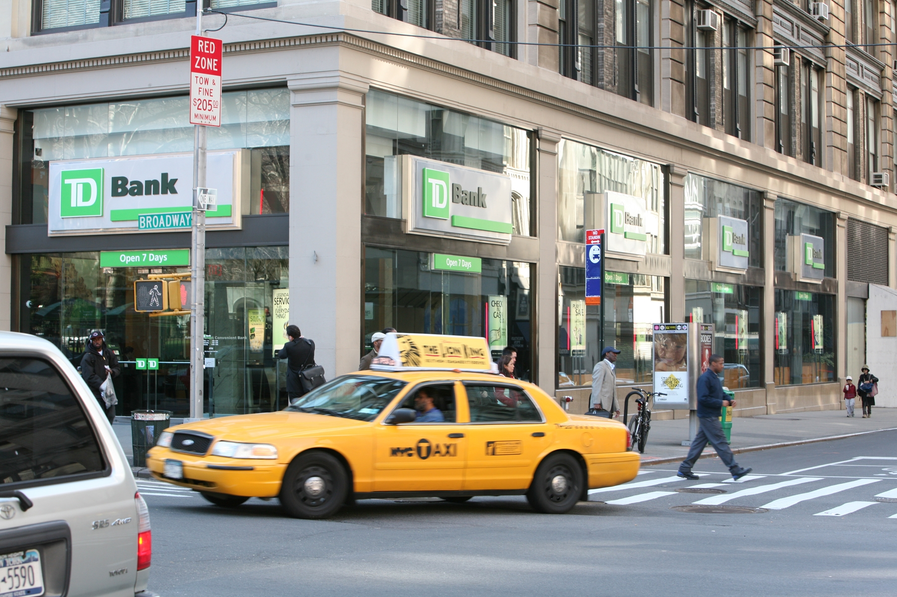

Even Starbucks begin to feel the pressure of New York rents. Several locations are closing because of the skyrocketing rents. The Starbucks on 33rd and 5th recently closed when their lease topped $1 million a year.
Two additional councilmembers have recently endorsed legislation that would give small businesses more rights when negotiating leases, such as being able to demand a ten year lease. Currently, rent in commercial spaces is unregulated and data shows almost 490 small businesses are evicted a month in New York City, according to a report from the New York City Landlord and Tenant Courts.
Queens councilman Jimmy Van Bramer and Brooklyn councilman Mark Treyger recently sponsored the Small Business Jobs Survival Act to offer commercial tenants greater renewal negotiation rights and housing stability. More precisely, it would give tenants the right to demand a 10-year lease and allow commercial tenants to bring lease renewals to arbitration if they think the terms are unacceptable.
The bill has been in the works for three decades, and it has a history of being blocked by big real estate. In 2009 the bill had 32 votes, but former City Council Speaker Christine Quinn killed it the weekend before it was to come to the floor for a vote. A number of Council members who supported the bill back in 2009 to 2010 are either being silent about it now, or say it has "legal problems."
The average retail rent in Manhattan has risen 22 percent over the past decade, according to the Real Estate Board of New York City.
Source from the OCA office.
There are less evictions since the beginning of Guilana's term. However, these numbers can be decieving in part because the number of small businesses has declined as landlords have doubled and tripled store space for bigger franchises, such as big banks. In other words taken three or four businesses and combined them into one.

From 2014 - 2010, there have been 461 new bank branches in the city, bringing the total to 1,763.
Additionally evictions only occur when the landlord asks the court for a warrant to vacate due to not being paid his rent owed. In New York City commercial spaces are unregulated. Once a lease expires, there is no limit on the rent the landlord can charge a tenant, nor does a landlord have any obligation to offer you a lease renewal if such an obligation had not been written in the lease. Most small businesses close once a lease expires.